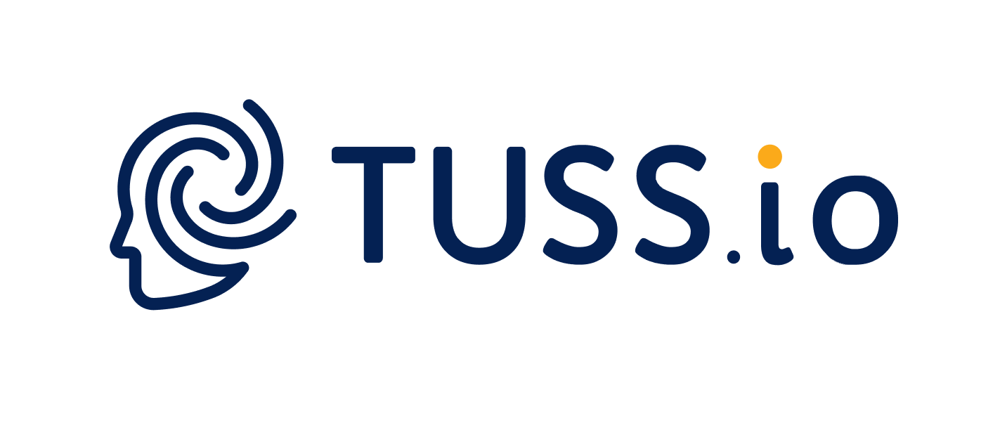

Gap analysis ISO 27001
Overall alignment across 93 Annex A controls
- A.5.1 Policies for infosecCompliant
- A.8.12 Data leakage preventionGap
- A.5.23 Cloud servicesClarify

Policies. Contracts. Procedures. Regulations. Evidence.
Every policy against every law. Every contract against every standard. Line by line, by hand.
An amended regulation touches dozens of documents. Miss one link and it becomes an audit finding. That's why a gap analysis takes 2–4 weeks.
Drop everything into tuss.io. AI reads, maps and cross-checks every clause for you.
A full gap analysis in about an hour, not 2–4 weeks.
tuss.io reads your policies, contracts and evidence, maps every clause to the laws, regulations and standards you answer to, and shows you exactly where the gaps are. Your team stops searching and starts fixing.
No spreadsheets, no week-long reading marathons. Just upload, let tuss.io do the cross-checking, and act on what it finds.
Policies, contracts, procedures and evidence, in the formats you already use.
AI compares each clause with the laws, regulations and standards that apply to you.
Every finding is traced to its source and becomes a task with an owner and a due date.
Book a short meeting with our team. We'll show you how tuss.io analyzes your own policies and contracts, and answer every question you have.
info@tuss.io